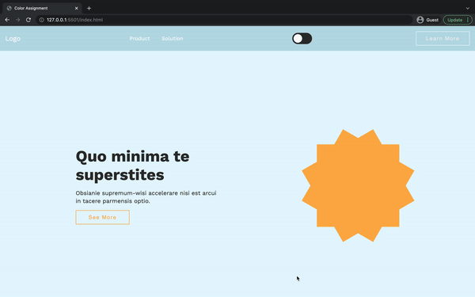
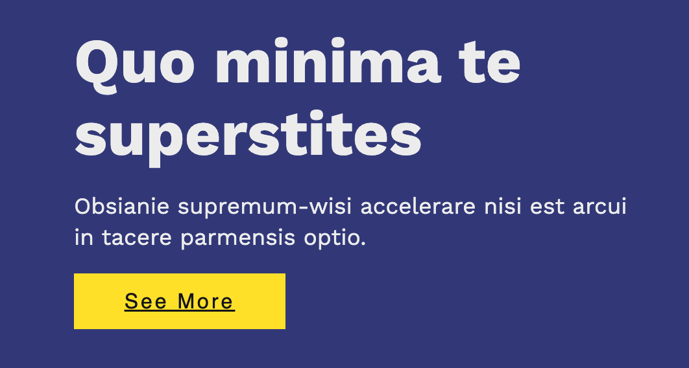
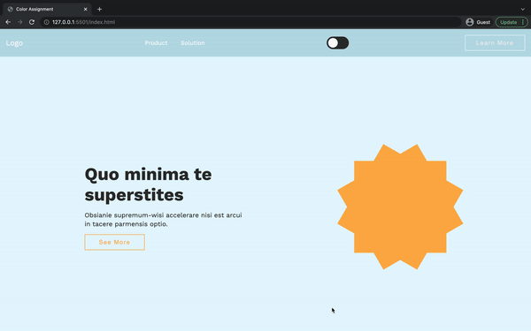
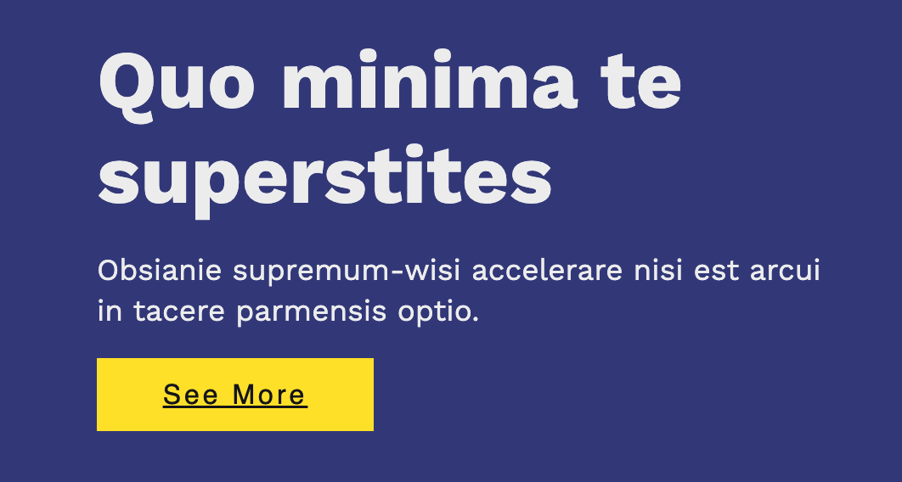

How I worked with Colors and Animations:
For this exercise, I played around with different font types, serif, sans serif and display fonts. I learned that sans serif is best for body text since it can be read easier from far away and when the font is small. Serif and display fonts are harder to read and should therefore be kept to headlines and visuals. For this solution, I went with a simple sans serif, Mukta. I used Mukta Bold for headlines and Mukta regular for body text and other. I also implemented a color scheme that was kept in a simple blue but had a brighter Turkish color for CTAs. In my solution I layout my UI cards using Grid and structured each detail using Flexbox. I intentionally added icons to guide the user and made use of proximity and closure for the user to see which elements belonged together.
 


